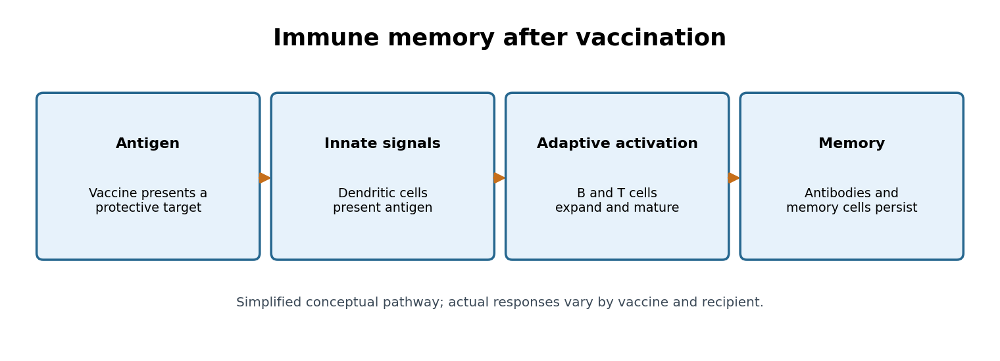
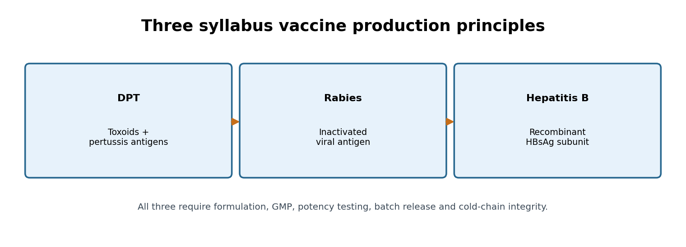
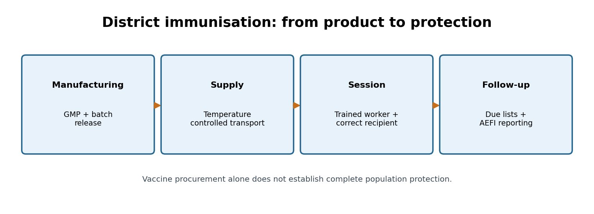

Integrated PDF · Editable master · Preserved original PDF
TGPSC Group I · Paper V · Unit II · Topic 5 · 24 October 2026 · Independent study draft · NOT academically approved
The original Telangana State Public Service Commission Notification 02/2024, dated 19 February 2024, Paper V Unit II item 5 states: “Vaccines: Introduction to immunity, Fundamental concepts in vaccination and traditional methods of vaccine production (production of DPT and Rabies vaccine), Production of modern vaccines (production of Hepatitis Vaccine).” [S01]. The commission-hosted PDF was directly opened and the wording checked on 24 October 2026. This independent chapter is not an official TGPSC publication. Its practice questions are original; no question is presented as an authenticated commission PYQ.
| Exact syllabus demand | Main sections | Exam skill |
|---|---|---|
| Introduction to immunity | 1–3 | Innate/adaptive, active/passive, immune memory |
| Fundamental vaccination concepts | 3–5, 12–15 | Antigens, platforms, safety, quality and public health |
| Traditional DPT production | 6–7 | Toxoids, whole-cell/acellular pertussis and testing |
| Traditional and modern rabies production | 8–9 | Inactivated viral vaccine, PEP and One Health |
| Modern hepatitis vaccine production | 10–11 | Recombinant HBsAg, expression and purification |
| Telangana, India, current affairs | 13–18 | UIP, district administration, data and equity |
Reading route: sections 1–5 establish scientific principles; 6–11 compare the three named vaccines; 12–18 connect production, safety and governance. After the chapter, use the standalone quick revision, 30 explained original MCQs, six mains blueprints and six complete model answers. This is educational material and does not replace clinical vaccination or exposure-management advice.
Immunity is not a single substance circulating in the blood. It is a coordinated capacity to recognise danger, limit infection, remove damaged cells and remember selected encounters. The first distinction is between innate immunity, which responds rapidly using barriers and broadly conserved danger signals, and adaptive immunity, which recognises particular antigens through specialised lymphocytes. Skin, mucus, acidic gastric contents, complement proteins, phagocytes and inflammatory signalling belong chiefly to innate defence. They can contain many infections before antigen-specific antibodies appear. Their speed comes at the cost of comparatively limited antigen specificity and conventional memory.
Adaptive immunity develops through B and T lymphocytes. A B-cell receptor binds an antigenic structure; after appropriate activation, selected B cells become plasma cells producing antibodies or long-lived memory cells. Helper T cells coordinate responses, while cytotoxic T cells can eliminate infected cells displaying relevant peptides. Antigen-presenting cells connect the systems: dendritic cells sample material, mature in response to danger signals and present peptide fragments with major histocompatibility complex molecules to T cells. Vaccination exploits this natural learning process without requiring the recipient to endure the full disease.
Antigen means a molecular feature recognised by an immune receptor; immunogen is an antigen capable of inducing an immune response in a particular setting. The distinction matters because a purified molecule may be recognisable yet poorly immunogenic without an adjuvant or appropriate presentation. Antibodies may neutralise toxins, block entry of a virus, facilitate phagocytosis or activate complement. A measurable antibody concentration is not automatically a complete measure of protection: cellular immunity, mucosal immunity and the quality of antibody binding can matter.
In a Telangana district, immunity is not merely an individual laboratory topic. A child's protection depends on completing age-appropriate doses, vaccine potency at the service point, trained staff and timely detection of missed visits. A programme can purchase sufficient vials yet leave children susceptible if the final vaccination session is inaccessible. Exam inference: distinguish biological immune response from public-health delivery; both determine real-world vaccine impact.
A typical primary immune response begins when innate sensors detect a pathogen or vaccine-associated signals. Local inflammation recruits cells and promotes antigen transport to lymph nodes. Naive B and T cells with receptors fitting the antigen are rare, but clonal expansion increases their numbers. B cells can undergo affinity maturation in germinal centres; antibodies produced later may bind more effectively than those produced early. Some activated cells die after the threat subsides, while memory cells and long-lived plasma cells persist. On re-exposure, these populations can respond more rapidly, sometimes preventing symptomatic disease.
Humoral immunity refers mainly to antibodies and B-cell functions in extracellular spaces. It is crucial for neutralising diphtheria and tetanus toxins and for antibodies against hepatitis B surface antigen. Cell-mediated immunity involves T-cell responses and activation of infected-cell clearance; it is important when a pathogen spends much of its life inside host cells. The two arms reinforce each other rather than operating as alternatives. Helper T-cell signals often improve the strength, duration and affinity of B-cell responses.
Primary versus secondary response is a recurring examination comparison. Primary responses have a lag, initially produce less mature antibodies and build memory. Secondary responses can be faster and stronger because the repertoire has already been selected. But the size of the response depends on the vaccine platform, dose spacing, age, immune status and prior exposure. Infants have developing immune systems and may carry maternal antibodies; elderly and immunocompromised people can respond differently. This explains why schedules are not arbitrary collections of dates.
Active immunity develops when a person's immune system responds to infection or vaccination; it generally takes time but may generate memory. Passive immunity comes from ready-made antibodies, such as maternal IgG or administered immunoglobulin; protection is immediate but declines as antibodies are cleared. In severe rabies exposures, active vaccine and passive rabies immunoglobulin may be used together because vaccine-induced antibodies need time to develop. Neither category should be confused with a live versus inactivated vaccine. The first distinction describes the recipient's source of protection; the second describes a product's biological design.
Vaccines present an antigen or instructions for making one. An epitope is the precise region recognised by an antibody or T-cell receptor. Proteins may contain many epitopes; some elicit neutralising antibodies, others generate binding antibodies with limited functional value. A vaccine developer therefore asks which antigens are conserved, accessible, safe and capable of inducing durable protection. For a toxin-mediated disease, neutralising the toxin may be more relevant than preventing every instance of bacterial carriage. For a rapidly mutating respiratory virus, antigenic change may erode protection against infection while leaving some protection against severe disease.
Adjuvants improve immune recognition or persistence of the response. Aluminium-containing adjuvants are used in many toxoid and recombinant protein vaccines; their precise effect cannot be reduced to the simplistic claim that they merely 'increase antibody count'. Formulation influences antigen presentation, local signalling and the balance of immune responses. Stabilizers protect a product during storage; preservatives may be used in some multidose presentations. These components are selected, tested and regulated; their functions differ and should not be treated as interchangeable.
A correlate of protection is a measurable immune marker statistically associated with protection. Anti-HBs concentration after hepatitis B vaccination is a well-established example in particular clinical contexts, but interpretation depends on timing, population and policy. For other infections, protection may be multifactorial or a validated correlate may not exist. Antibody titres from two assays may not be directly comparable. This is why vaccine evaluation uses clinical outcomes, immunogenicity and post-licensure effectiveness rather than relying on a single laboratory result.
Vaccination can prevent infection, reduce symptomatic illness, prevent severe disease or reduce transmission, but the degree of each effect varies. The public-health objective must be specified before judging success. A vaccine that substantially reduces hospitalisation can remain valuable even if it does not completely stop asymptomatic infection. Conversely, a product with good individual efficacy may have limited population impact when delivery is inequitable. A high-scoring mains answer explicitly separates antigen selection, adjuvant design, immune endpoints and programme endpoints.
Traditional vaccine classifications describe what reaches the immune system. Live-attenuated vaccines use a weakened replicating organism that can imitate aspects of natural infection; they may elicit broad responses but require particular safety assessment in immunocompromised people and can have demanding storage requirements. Inactivated whole-organism vaccines contain organisms rendered non-infectious; they cannot replicate, but often require adjuvants or repeated doses. Toxoids are bacterial toxins rendered non-toxic while retaining relevant antigenic structures. Protein subunit vaccines contain selected antigenic proteins; polysaccharide conjugate vaccines chemically link sugar antigens to carrier proteins to improve T-cell-dependent responses.
Acellular pertussis formulations contain selected purified components, whereas older whole-cell pertussis formulations present inactivated bacterial cells. Both can protect, but they differ in antigen breadth, reactogenicity, immune profiles and manufacturing complexity. A vaccine's platform is not a quality ranking: a 'modern' platform is not necessarily more effective for every disease or programme setting. Public-health choices weigh disease epidemiology, safety, durability, cost, supply and feasibility.
Recombinant protein vaccines use genetic engineering in a production organism to express a chosen antigen, then purify and formulate that antigen. Hepatitis B surface antigen produced in yeast is the classic example in this syllabus. Viral-vector and nucleic-acid vaccines use a vector or genetic instructions so recipient cells produce antigen; their delivery, safety and immune pathways differ from protein-subunit vaccines. The COVID-19 period made these platforms familiar, but the syllabus specifically asks for the production logic of recombinant hepatitis B vaccine.
A useful comparison has five columns: antigen source, replication in recipient, principal immune stimulus, advantages and constraints. Never confuse inactivation of a pathogen with detoxification of a toxin. Diphtheria and tetanus vaccines rely on toxoids; rabies vaccines used for humans are inactivated viral vaccines; hepatitis B vaccines commonly use recombinant surface-antigen subunits. This three-way contrast directly answers the central Paper V Unit II Topic 5 examination demand.
Vaccination history is a sequence of changing scientific assumptions, not a clean switch from unsafe old products to universally safe new products. Variolation preceded the systematic use of cowpox vaccination against smallpox. Pasteur's rabies work established the possibility of weakening an infectious agent for preventive use, but historic nerve-tissue-derived rabies vaccines carried disadvantages and are not the recommended modern human products. Subsequent developments included toxoids, inactivated viruses, improved cell culture, purified antigens and recombinant DNA technology.
The syllabus uses the phrase traditional methods of vaccine production alongside DPT and rabies. This is best interpreted as a conceptual contrast between cultivating/inactivating or detoxifying biological material and expressing a specific antigen using recombinant technology. It does not mean that today's licensed rabies vaccines are prepared with nineteenth-century techniques. Modern cell-culture rabies vaccines use carefully controlled virus propagation and inactivation, followed by purification and rigorous quality assurance. Traditional whole-cell DPT similarly requires defined, validated processes; calling it 'traditional' does not exempt it from contemporary manufacturing regulation.
Historically, toxoid science separated the ability of a bacterial toxin to harm tissue from the ability of a suitably modified toxin to provoke neutralising antibodies. This insight is particularly important for diphtheria and tetanus, where much of the disease's damage is mediated by exotoxins. In contrast, rabies is a viral infection for which a killed-virus antigen stimulates protective neutralising antibodies. Hepatitis B recombinant vaccines mark another conceptual advance: the protective surface antigen can be manufactured without propagating infectious hepatitis B virus for the vaccine antigen.
An examiner may ask whether a platform innovation automatically solves coverage gaps. It does not. The eradication of smallpox depended on vaccination, surveillance, case detection, containment and governance. Similarly, modern India requires cold-chain systems, safe injection practices, informed communication and reliable follow-up. The history of vaccines thus connects molecular biology with public administration: scientific discovery produces a candidate product; organised institutions convert that product into equitable population protection.
DPT combines protection against diphtheria, pertussis and tetanus, but the letters conceal three distinct disease mechanisms. Diphtheria is caused by toxin-producing Corynebacterium diphtheriae. The toxin can injure the heart and nervous system; vaccine-induced antitoxin antibodies are therefore central to protection. Tetanus is caused by neurotoxin produced by Clostridium tetani after spores enter suitable wounds. The organism's environmental spores cannot be eradicated by herd immunity, so individual immunisation and appropriate wound care remain essential. Pertussis is a contagious respiratory illness caused by Bordetella pertussis, with severe consequences for young infants.
Diphtheria and tetanus vaccine components are toxoids: detoxified antigens designed to preserve immunogenicity while removing toxic activity. Pertussis protection can be supplied by an inactivated whole-cell preparation (wP) or selected acellular antigens (aP). Whole-cell formulations are still used in many programmes; acellular formulations are used in other schedules. Differences in local reactions, duration of protection, immune response and cost should be described carefully rather than as absolute claims. Combination formulations are tested for interactions among components and for consistent potency.
DPT's public-health significance is not restricted to infants. Tetanus protection requires booster policies; pertussis outbreaks can affect adolescents and adults who may transmit infection to infants; diphtheria outbreaks can occur where routine coverage falls. The Indian Universal Immunization Programme uses a pentavalent combination for primary infant doses, incorporating DPT antigens with hepatitis B and Hib components, while DPT boosters remain part of the schedule. This avoids multiple separate injections and simplifies some delivery logistics, but it does not remove the need for complete visits.
A district officer should ask three different questions after a suspected outbreak: Is there an exposure or infection requiring immediate clinical management? Is there evidence of under-vaccinated cohorts? Are cold-chain, stock and session records reliable? A single district coverage percentage cannot answer all three. Distinguish prevention of diphtheria toxin-mediated disease, individual tetanus protection and interruption of pertussis transmission when constructing a mains answer.
A high-level manufacturing explanation begins with a defined biological starting material and ends with a released, quality-controlled vaccine lot. For diphtheria and tetanus components, manufacturers obtain toxin antigens under controlled conditions, apply validated detoxification, purify or process the resulting toxoids and assess residual toxicity, identity, antigenicity and potency. The critical principle is that a toxoid must no longer cause the disease-associated toxic effect while still presenting protective antigenic features. An ineffective detoxification step raises a safety concern; excessive alteration of antigenic structure can reduce immunogenicity.
For the pertussis component, a whole-cell approach uses controlled production of bacterial material followed by validated inactivation and formulation. Acellular alternatives isolate and detoxify or otherwise prepare defined pertussis antigens. A combination vaccine then integrates the components with appropriate adjuvant and excipients. Manufacturers must evaluate compatibility, stability, antigen content, consistency and interactions in the final presentation. The specific industrial conditions are proprietary, product-dependent and governed by validated standard operating procedures; examination answers should explain the logic rather than invent precise temperatures or culture recipes.
Quality assurance is broader than sterility. Identity tests confirm that the intended components are present; potency tests address biological activity relevant to protection; safety tests evaluate residual harmful activity and contamination; stability programmes establish appropriate shelf life. Batch documentation permits traceability and investigation of a defect. Manufacturing facilities operate under Good Manufacturing Practices, and national regulators inspect processes and review evidence. India's Central Drugs Standard Control Organisation and Central Drugs Laboratory, Kasauli, have important regulatory and lot-testing roles.
The strongest answer presents DPT as three parallel antigen pathways converging into one finished formulation. A common weak answer states 'grow bacteria, kill them, inject', which is wrong for toxoid components and omits potency, inactivation validation, adjuvant formulation and release testing. A stronger explanation also notes that India's primary infant schedule commonly uses pentavalent vaccine rather than a stand-alone DPT dose at each primary visit. Manufacturing design and programme formulation must not be confused.
Rabies is a zoonotic viral infection, most often transmitted through infected mammalian saliva entering a bite or scratch wound. The virus can travel along peripheral nerves toward the central nervous system, where clinical disease is usually fatal. The delay between exposure and symptoms creates an opportunity for post-exposure prophylaxis (PEP). This is a distinctive feature of rabies prevention: unlike routine childhood vaccination, an urgent vaccine series can still prevent disease after exposure when given promptly and appropriately before symptoms develop.
Public-health guidance begins with immediate wound cleansing and medical assessment. WHO advises thorough washing and flushing of potential exposure wounds for about 15 minutes and appropriate vaccination according to exposure category; rabies immunoglobulin is indicated for particular severe exposures in previously unvaccinated people. Exact clinical decisions, product choice, route and schedule belong to qualified health professionals and current national guidance. A study chapter must not substitute an old textbook schedule for current PEP protocols. Pre-exposure prophylaxis is also relevant for certain high-risk occupations, such as veterinary or laboratory work.
The One Health perspective links human protection with dog vaccination, animal surveillance, responsible ownership, waste management and accessible bite-treatment facilities. Human PEP saves individuals after exposure; sustained dog vaccination reduces the underlying risk. India's National Rabies Control Programme and the target of eliminating dog-mediated human rabies deaths by 2030 illustrate this combined approach. The target is a policy goal, not evidence that elimination has already occurred.
A hypothetical Telangana village case helps. After several dog bites, the response should not be limited to counting vaccine doses administered. It should ensure immediate clinical referral, reliable stock of modern vaccine and immunoglobulin, clear records of return visits, reporting and coordination with veterinary authorities. A programme that has vaccine in a district warehouse but none in a reachable treatment facility fails at the point of care. In examinations, always separate exposure prevention, immediate PEP, pre-exposure vaccination and reservoir control.
The historical story of rabies vaccination includes nerve-tissue preparations and later embryonated-egg and cell-culture technologies. Nerve-tissue vaccines had limitations in safety and immunogenicity and have been superseded by modern products. Today's recommended human rabies vaccines are based on inactivated virus grown in suitable controlled biological systems, including established cell-culture platforms. The manufacturing objective is to present protective viral antigens while ensuring that the finished preparation contains no infectious virus.
Conceptually, production involves a characterised viral seed, a qualified production substrate, controlled antigen production, validated inactivation, purification, formulation and quality-control release. This is an explanatory sequence, not a laboratory protocol. Manufacturers must verify inactivation and the absence of relevant contaminants, evaluate potency and stability, and maintain traceability. WHO standards and national regulatory oversight matter because failure at any one step can undermine the entire protective value of a lot.
The vaccine is only one component of rabies prevention. Rabies immunoglobulin supplies immediate passive antibodies for indicated exposures while active vaccine induces the recipient's response. Immunoglobulin is not the same thing as an adjuvant and does not replace vaccine. Similarly, pre-exposure vaccination does not mean an exposed person can ignore wound care or medical assessment. These distinctions frequently appear in conceptual MCQs.
India's access problem combines biology and logistics. A district may need trained intradermal vaccinators, cold-chain capacity, appropriate documentation and referral arrangements. WHO recognises intradermal use of suitable cell-culture rabies vaccines as a dose-sparing approach under approved protocols; the route must be selected by trained providers. The comparative question 'traditional versus modern rabies vaccines' should therefore describe the transition away from nerve-tissue products, the rise of cell-culture inactivated products and the regulatory safeguards that made routine use safer. It must not romanticise old techniques or supply obsolete clinical schedules.
Why the transition matters (source-checked comparison). The WHO Expert Consultation on Rabies (TRS 1012) specifically recommended discontinuing nerve-tissue vaccines because of their poorer safety and immunogenicity profiles, and replacing them with cell-culture or embryonated-egg vaccines [S26]. That is a policy judgment about the vaccine substrate, not an assertion that historical nerve-tissue products and current inactivated products contain the same impurities. A mains answer should separate four questions: what material carries the antigen, how infectious activity is eliminated, what independent release tests establish, and whether exposed patients can access timely prevention. Treating 'inactivated' as synonymous with 'safe without testing' would be incorrect. The 2018 WHO rabies position paper addresses both pre-exposure and post-exposure immunisation and, where indicated, rabies immunoglobulin [S27]. For an exam case, compare two hypothetical districts with identical vial supplies but different bite-reporting and referral delays: the second may prevent fewer deaths despite equivalent procurement. This demonstrates why manufacturing quality and clinical access are distinct safeguards.
Hepatitis B virus (HBV) infects the liver and can cause acute hepatitis or chronic infection. Chronic HBV can lead to cirrhosis and hepatocellular carcinoma, making the vaccine an example of cancer prevention through infection control. Transmission can occur from mother to child around birth, during early childhood and through blood or certain body-fluid exposures. The risk of chronic infection is particularly high when infection occurs in infancy, which is why timely newborn vaccination is central rather than optional.
The main protective vaccine antigen is hepatitis B surface antigen (HBsAg). Antibodies directed against HBsAg can prevent infection. This is not the same as vaccinating with an entire infectious HBV particle. Recombinant vaccines express HBsAg in a production system, purify it and formulate it to elicit protective antibodies. They do not contain infectious hepatitis B virus. The distinction also clarifies why hepatitis B vaccine does not treat established chronic hepatitis B infection: vaccination is a preventive intervention, whereas treatment and monitoring require different clinical strategies.
WHO's 28 July 2026 fact sheet estimated 240 million people living with chronic HBV infection in 2024 and about 1.1 million HBV-related deaths that year, largely from cirrhosis and liver cancer. These are global estimates with a 2024 reference period, not Indian or Telangana counts. WHO recommends hepatitis B vaccination as soon as possible after birth, ideally within 24 hours, followed by the complete infant series. In India the birth dose and pentavalent doses later in infancy address complementary windows of risk.
An effective policy cannot rely only on vaccination. Antenatal screening, safe injections, blood safety, infection prevention, access to testing and clinical care remain important. For a remote Telangana facility, the difficult last mile may be a night-time delivery when no vaccine-trained worker or usable stock is available. The examination insight is that timely birth dose requires coordination among maternity services, immunisation staff and cold-chain logistics, not merely a national schedule printed on paper.
Recombinant hepatitis B vaccine is a landmark in vaccine biotechnology because the protective antigen can be produced without cultivating infectious hepatitis B virus as the antigen source. Scientists identify the genetic sequence encoding hepatitis B surface antigen, introduce an expression construct into a suitable manufacturing cell and select a qualified production system. Yeast platforms have been widely used, while certain mammalian-cell systems are also recognised. The cells manufacture HBsAg, which is subsequently recovered, purified and formulated into a vaccine.
The essential scientific chain is gene selection → recombinant expression → antigen recovery and purification → formulation → validated quality testing → licensed distribution. HBsAg may self-assemble into non-infectious particles that display multiple copies of antigen. The final product often uses an aluminium-containing adjuvant to improve the immune response. Regulatory evaluation considers identity, antigen content, residual host-cell materials, sterility or microbiological quality, potency, stability and consistency across lots. A precise industrial protocol cannot be inferred from this conceptual diagram; individual licensed products have validated, controlled procedures.
Historically, earlier hepatitis B vaccines purified HBsAg from human plasma. Recombinant production reduced dependence on human blood products and made antigen manufacture more scalable. That does not mean recombinant manufacturing is automatically free of all risk. Host-cell proteins, impurities, batch variability, cold-chain failures and distribution errors still require control. The regulatory focus moves from donor screening to characterisation of recombinant cell substrates, process validation and product testing, alongside general biological-product requirements.
WHO's technical recommendations for recombinant hepatitis B vaccines explain the quality-control rationale, and the WHO vaccine-standardisation page identifies yeast and mammalian expression platforms. An excellent answer compares DPT toxoids, inactivated rabies vaccine and recombinant hepatitis B antigen in a single table. DPT mainly transforms toxin and pertussis antigens; rabies inactivates a virus; recombinant HBV makes a selected surface protein in engineered cells. The endpoint in all cases is safe, reproducible immune priming, but the biological route to that endpoint differs.
Vaccine manufacturing is a controlled system rather than a one-time successful experiment. Good Manufacturing Practices (GMP) require defined processes, trained personnel, suitable facilities, validated equipment, documented deviations and traceable materials. Biological variability makes process consistency especially important. Quality assurance governs the whole system; quality control uses specific tests and acceptance criteria to evaluate materials and finished products. Both are needed. A batch that passes a few final tests cannot compensate for undocumented contamination or unvalidated manufacturing changes.
Critical product attributes include identity, potency, purity, safety and stability. Sterility testing is important for injectable products, but it is not a universal substitute for every biological quality requirement. Inactivation validation is central for inactivated viral vaccines; residual toxicity testing is important for toxoids; host-cell impurity assessment is relevant for recombinant products. Shelf-life claims require stability evidence under labelled conditions. Changes in a manufacturing process may require comparability assessments to ensure that safety and efficacy are not compromised.
In India, CDSCO is the national regulatory authority for medicines and vaccines, and the Central Drugs Laboratory at Kasauli is an important national control laboratory for immunobiologicals. Regulators assess manufacturing and clinical evidence, licensing conditions, safety monitoring and product quality. These roles should not be confused with the policy and service-delivery functions of the Ministry of Health and Family Welfare or state health departments. A manufacturer is responsible for its quality system; regulators provide independent oversight.
After release, vaccines must retain potency through transport, storage and session use. Cold-chain management includes appropriate equipment, temperature monitoring, contingency plans and trained staff. The exact labelled storage conditions depend on the product. A vaccine vial monitor, where provided, helps assess cumulative heat exposure but does not replace all temperature records or detect every freeze-damage problem. A Telangana district facing power disruptions needs backup arrangements and documented excursion procedures. The exam question 'why do good vaccines fail?' should include both factory failures and post-factory handling failures.
India's Universal Immunization Programme (UIP) provides vaccines for children and pregnant women through a public-health delivery system. The National Immunization Schedule includes a hepatitis B birth dose, primary pentavalent vaccination in infancy and later DPT boosters. Official Ministry of Health and Family Welfare material identifies pentavalent doses at 6, 10 and 14 weeks, DPT boosters at 16–24 months and 5–6 years, and age-appropriate Td doses. These are schedule facts for examination study, not an individual clinical prescription; official updates and catch-up guidance govern practice.
Pentavalent vaccine combines diphtheria, pertussis, tetanus, hepatitis B and Haemophilus influenzae type b antigens. Its use illustrates both benefits and complications of combination products. It can reduce injections and simplify session planning, but supply disruption affects several antigens simultaneously. Vaccine choice is not determined solely by a parent's preference for fewer injections; evidence, licensing, age, programme policy and contraindications matter.
Mission Indradhanush, launched on 25 December 2014, aims to reach children and pregnant women missed by routine immunisation. The U-WIN digital platform records vaccination events and helps track due and missed doses. A June 2025 government brief reported 10.48 crore beneficiaries registered on U-WIN as of 30 May 2025; this is a dated administrative count, not an estimate of fully immunised children. Digital records improve visibility but cannot substitute for outreach to families lacking connectivity, documentation or easy transport.
The health-system chain runs from national policy and procurement through state stores, district cold-chain points, primary health centres and frontline vaccination sessions. ANMs, ASHAs, Anganwadi workers and supervisors perform different but complementary roles. In urban Hyderabad, migrant families may change addresses frequently; in remote tribal hamlets, physical distance may dominate. Both can produce missed doses, yet require different solutions. Strong answers connect immunology with the service-delivery pyramid and propose district-level monitoring of due lists, dropouts, stock-outs and AEFI reporting.
Immunisation coverage is measured in several ways, each answering a different question. DTP1 indicates the proportion of the target birth cohort receiving a first DTP-containing dose; it is often used as a proxy for initial service access. DTP3 measures completion of the third dose and therefore combines access with continuity. Zero-dose children are commonly operationalised in global monitoring as children who have not received DTP1, though the literal phrase may suggest no vaccine of any kind. Dropout rate compares those starting and completing a series; it should not be confused with vaccine efficacy or with the fraction of all children missed.
WHO and UNICEF's 15 July 2026 release estimated that in 2025, 90% of infants globally received DTP1 and 85% received DTP3, while 13.5 million children were zero-dose. These figures concern 2025, not October 2026, and are global rather than Telangana-specific. The South-East Asia regional release dated the same day reported DTP3 coverage of 94% for 2025. Regional averages can conceal district inequalities. An answer should state the denominator, data year, geographic scale and definition before quoting any rate.
Vaccine efficacy is typically measured in controlled trials under specified conditions; vaccine effectiveness measures protection in real-world populations. Both depend on the endpoint: laboratory-confirmed infection, symptomatic disease, hospitalisation or death. A study with different exposure risks, age distributions or case definitions cannot be compared by headline percentages alone. Vaccine safety is assessed separately; an efficacious product must also have an acceptable risk-benefit profile.
A hypothetical district has 10,000 eligible infants, 9,000 DTP1 recipients and 8,100 DTP3 recipients. DTP1 coverage is 90%; DTP3 coverage is 81%; dropout among starters is (9,000−8,100)/9,000 = 10%. A planner who reports only 90% access misses 900 starters who did not complete the series and 1,000 who never started. The response requires both first-contact outreach and retention. This small calculation can strengthen an otherwise descriptive mains answer.
An adverse event following immunisation (AEFI) is an untoward health event after vaccination, whether or not the vaccine caused it. Temporal sequence alone is not proof of causation. Investigators consider clinical diagnosis, timing, background incidence, alternative causes, vaccine quality, administration errors and patterns across cases. The WHO distinguishes programme errors, coincidental events, anxiety-related responses and true product-related reactions within causality assessment frameworks. The correct response is transparent reporting and careful investigation, not automatic dismissal or automatic attribution.
Most vaccine reactions are mild and short-lived, such as local soreness or transient fever. Rare serious adverse reactions can occur, and different products have different safety profiles. Monitoring continues after licensing because trials may not detect extremely rare outcomes or all special-population risks. Surveillance quality matters: a rise in reported AEFIs can reflect improved reporting rather than worsening product safety. Equally, absence of reports is not proof that no events occurred.
The WHO Global Advisory Committee on Vaccine Safety published a 11 December 2025 review reaffirming that available evidence does not support a causal link between childhood vaccines and autism. This illustrates the need to separate repeated claims from well-designed epidemiological evidence. Responsible communication avoids both false reassurance ('no vaccine ever causes harm') and sensational extrapolation from individual anecdotes. Communities deserve plain-language explanations of benefits, expected reactions, warning signs and reporting channels.
Imagine a cluster of fevers after an outreach session in Telangana. The district should provide clinical assessment, secure product and session records, identify lot numbers, evaluate cold-chain logs and report through the appropriate surveillance system. It should communicate what is known and what remains under investigation. Concealing uncertainty damages trust; publicly declaring causation before investigation can also harm trust. A high-quality answer proposes independent assessment, feedback to families and corrective action where warranted, while maintaining access to essential immunisation services.
Causality-assessment example (hypothetical, not an incidence estimate). Suppose a district administers 10,000 doses during a campaign and records 12 reports of fever within two days. The observed reporting rate is 12/10,000 × 100,000 = 120 reports per 100,000 administered doses. This figure is neither a vaccine-attributable risk estimate nor evidence that all 12 illnesses were caused by vaccination. Investigators must verify case definitions, onset times, expected background illness, vaccination errors and product-lot clustering; reporting completeness may also differ between facilities. WHO's AEFI definition expressly allows events with no causal relationship, and its causality-assessment framework uses structured evidence rather than temporal coincidence [S28]. A practical district response separates immediate clinical care, rapid notification, transparent communication and independent review. The comparison that matters is not '12 reports versus zero', but the pattern against credible background and comparator information, with uncertainties stated. This avoids the two opposite errors of suppressing reports and declaring causation prematurely.
Telangana offers contrasting implementation settings within one state. Hyderabad and surrounding urban areas have large populations, private providers, mobile households and fragmented records. A child who receives a first dose at one facility may return to another; continuity requires interoperable records and clear communication. In remote villages and tribal habitations, transport costs, monsoon access, workforce availability and cold-chain infrastructure may be more important than digital fragmentation. Neither setting can be understood through a single state-wide coverage percentage.
Case A — Hyderabad migrant family (hypothetical): A family moves between two neighbourhoods after a child receives the first pentavalent dose. The second clinic should verify documented history, update the due list and use official catch-up guidance rather than restart the series automatically or assume completion. U-WIN may help if records are accurate, but frontline verification and caregiver communication remain necessary. The measurable outcome is completion, not merely creation of a digital profile.
Case B — remote primary health centre (hypothetical): A cold-chain refrigerator experiences a prolonged power outage. The correct response is not to infer that all vials are either safe or unsafe by appearance. Staff should follow product-specific temperature-excursion procedures, quarantine suspect stock where required, document temperatures and obtain authorised disposition. Planned outreach sessions may need alternate stocks or rescheduling with active follow-up so children are not lost to the system.
Case C — animal-bite cluster (hypothetical): A village reports multiple bites by an unvaccinated dog. Human PEP services, animal-health investigation and community information must proceed in parallel. Rabies control cannot be solved by distributing human vaccine alone. The National Rabies Control Programme and One Health coordination are relevant. These examples are analytical teaching scenarios, not assertions that particular outbreaks occurred in named Telangana districts. The state's vaccine-manufacturing ecosystem near Hyderabad also provides a useful policy context, but manufacturing location does not itself prove equitable state-wide vaccination coverage.
15 July 2026 — WHO/UNICEF WUENIC release. Global 2025 DTP1 coverage was reported as 90% and DTP3 as 85%; an estimated 13.5 million children remained zero-dose. The relevant exam angle is access versus completion, not a misleading claim that 85% of children received every recommended vaccine. The same release described persistent equity gaps. WHO South-East Asia reported regional DTP3 coverage of 94% for 2025, showing why a global average cannot substitute for region-specific figures.
28 July 2026 — WHO hepatitis B fact sheet. WHO estimated 240 million people with chronic hepatitis B in 2024 and emphasised prevention through timely newborn vaccination and completion of the infant series. These numbers are global burden estimates for 2024. The exam angle is why a birth dose addresses mother-to-child transmission risk that later pentavalent doses cannot fully reverse.
11 December 2025 — WHO vaccine-safety expert review. The Global Advisory Committee on Vaccine Safety reiterated the lack of a causal link between childhood vaccines and autism based on the available evidence. The exam angle is causality assessment and how health administrators should respond to misinformation without dismissing genuine AEFI reports.
30 May 2025 status, published June 2025 — U-WIN. A government brief reported 10.48 crore registered beneficiaries, 1.88 crore vaccination sessions and 41.73 crore recorded vaccine doses. These administrative figures measure system activity, not verified complete protection of every registered beneficiary. The exam angle is using digital tools for continuity while checking data quality and inclusion.
1 May 2024 — WHO rabies PEP protocol. WHO published guidance on wound and exposure assessment. This is a technical protocol, not a fixed universal prescription for every bite. The exam angle is urgent triage and the difference between active vaccine and passive immunoglobulin. 19 February 2024 — TGPSC Notification 02/2024 specified the topic's immunity, DPT, rabies and hepatitis-vaccine components. Current-affairs notes must be read as dated snapshots; updates after 24 October 2026 are not claimed.
A final synthesis should distinguish three vaccine production principles. DPT uses detoxified diphtheria and tetanus toxins with whole-cell or acellular pertussis antigens. Rabies uses an inactivated viral antigen produced through controlled biological systems, with post-exposure urgency making service delivery unusually time-sensitive. Hepatitis B uses recombinant expression of HBsAg, usually in yeast or another approved cell system, followed by purification and formulation. All require GMP, validated processes, lot testing and appropriate distribution.
There are legitimate policy tensions. Whole-cell pertussis formulations can be affordable and widely used but may have different reactogenicity profiles from acellular products. Combination vaccines reduce injection burden but can create linked supply vulnerabilities. Centralised procurement may improve bargaining power but demands robust forecasting and distribution. Digital registries can reveal missed doses but may exclude families if identity or connectivity barriers are not addressed. Rapid innovation can improve antigen design, yet manufacturing scale-up and regulatory review remain necessary before public deployment.
An ethical vaccine policy weighs individual consent, disease risk, community protection, equitable access and transparent safety monitoring. Herd effects depend on transmission dynamics and cannot be promised for every vaccine. Tetanus is the classic counterexample because it is acquired from environmental spores rather than transmitted from person to person. Rabies dog vaccination protects communities through reservoir control, not by creating human-to-human herd immunity. These distinctions separate sophisticated reasoning from memorised slogans.
The chapter's core conclusion is that vaccines are simultaneously immunological interventions, regulated biological products and public-service programmes. The science explains how memory and antibodies develop; manufacturing explains how a reliable antigen reaches the recipient; governance explains whether the right person receives the right dose at the right time. For Telangana Group I mains, an answer that combines these three levels, cites current evidence with dates and offers realistic district administration measures will be stronger than a catalogue of vaccine names.



Interpretation: Diagram A is a simplified immunological sequence, not a promise of sterilising immunity. Diagram B compares antigen production principles, not exact industrial recipes. Diagram C highlights why quality control and last-mile follow-up are both essential.
Vaccination depends on antigen recognition, B- and T-cell activation and the creation of immune memory. DPT combines diphtheria and tetanus toxoids with whole-cell or acellular pertussis antigens; modern human rabies vaccines contain inactivated viral antigen; recombinant hepatitis B vaccines contain purified HBsAg produced in a qualified expression system. The products differ in manufacturing logic, but all require validated quality systems and careful storage. India’s UIP connects these technologies to maternal-child health, while the National Rabies Control Programme illustrates urgent PEP and One Health action. DTP1 and DTP3 show access and continuity; AEFI reporting requires causality assessment. Telangana applications involve migrant families, remote habitations, cold-chain resilience and transparent communication. None of the original practice items below should be mistaken for an authenticated official PYQ.
Immunity map. Innate defence = barriers, complement, phagocytes and early inflammation. Adaptive defence = antigen-specific B/T lymphocytes. Humoral = antibodies; cell-mediated = T-cell functions. Active = recipient builds response; passive = ready-made antibodies. Primary response establishes memory; secondary response usually becomes faster. A toxoid is detoxified toxin, not a killed bacterium. An antigen can be recognised; an immunogen can elicit a response under suitable conditions.
Three required vaccine comparisons. DPT: diphtheria and tetanus toxoids plus whole-cell or acellular pertussis antigens. Rabies: modern inactivated viral vaccine, generally cell-culture-based; exposure may require immediate clinical PEP assessment and sometimes passive immunoglobulin. Hepatitis B: recombinant HBsAg protein, often expressed in yeast, purified and formulated. All three need validated manufacturing, batch tests, appropriate storage and safety surveillance. Recombinant does not mean genetically altered infectious HBV is injected.
Manufacturing answer template. Identify protective antigen; describe biological production platform; explain detoxification/inactivation or recombinant expression as appropriate; purification and formulation; GMP; potency, identity, purity, safety and stability; independent regulatory oversight; last-mile cold chain. Do not invent proprietary incubation times, detailed culture conditions or doses. Manufacturing descriptions are conceptual and educational.
DPT distinction. Diphtheria and tetanus disease severity is toxin-mediated; pertussis is respiratory and contagious. Tetanus spores occur in the environment, so classic human herd immunity is not the reason for individual protection. Whole-cell and acellular pertussis vaccines are not identical in reactogenicity or immune response. India's primary infant schedule uses pentavalent DPT + hepatitis B + Hib at 6, 10 and 14 weeks, with later DPT boosters according to the official schedule.
Rabies priority. Wash and flush potential exposure wounds promptly and seek professional assessment immediately. WHO PEP depends on exposure category and prior vaccination; vaccine induces active immunity while indicated rabies immunoglobulin provides passive protection. Human PEP and dog vaccination solve different but complementary parts of the problem. A goal to end dog-mediated human rabies deaths by 2030 is a target, not proof of achievement.
Hepatitis B priority. Birth-dose timing matters because infection at birth or early childhood carries a high risk of chronicity. WHO advises first dose ideally within 24 hours and completion of the infant series. Vaccination prevents infection but does not treat established HBV. WHO's 28 July 2026 fact sheet refers to 2024 global burden estimates; do not quote them as Telangana counts.
Indicators and arithmetic. DTP1 approximates access; DTP3 approximates completion. Dropout (%) = (DTP1 recipients − DTP3 recipients) / DTP1 recipients × 100. Coverage requires a target-population denominator. WHO/UNICEF's July 2026 release gave global 2025 DTP1 = 90%, DTP3 = 85%, zero-dose = 13.5 million. South-East Asia DTP3 = 94% for 2025. Avoid mixing years, regions and definitions.
Safety and administration. AEFI means a health event following vaccination, not automatically caused by vaccine. Assess causality; preserve lot, cold-chain and session records; communicate transparently. GMP applies from starting materials through manufacturing and documentation. CDSCO regulates vaccines in India; CDL Kasauli is a national control laboratory. U-WIN supports records and follow-up but registration alone is not evidence of full immunisation.
Five mains-ready analytical links. First, vaccine science must meet equity: missed migrant or tribal families need tailored outreach. Second, birth dose needs maternity-ward coordination. Third, cold-chain outages need documented excursion decisions. Fourth, rabies needs One Health coordination. Fifth, trust requires transparent AEFI assessment, not dismissal of concerns. Use Telangana as a context for policy reasoning without inventing district-level outbreaks or coverage percentages.
Common traps. Do not equate active with live vaccines; assume all vaccines block infection completely; claim that rabies immunoglobulin replaces vaccine; claim a toxoid is a live organism; use the global DTP3 rate as Telangana's rate; assume every event after vaccination was caused by it; or label original practice questions as official TGPSC PYQs. Review current clinical guidance before using any vaccine schedule in practice.
Q1. Which statement best distinguishes innate immunity from adaptive immunity?
A. Innate responses always use antibodies B. Innate responses are generally rapid and broadly patterned; adaptive responses are antigen-specific C. Adaptive responses lack memory D. Innate responses occur only after vaccination
Answer: B. Innate barriers, complement and phagocytes act quickly using broadly conserved signals. B- and T-cell receptors provide high specificity and conventional immune memory; innate and adaptive components communicate continuously.
Q2. A child receives ready-made rabies immunoglobulin. The immediate protection is an example of:
A. Active natural immunity B. Active artificial immunity C. Passive artificial immunity D. Herd immunity
Answer: C. Injected immunoglobulin provides antibodies produced elsewhere. It acts promptly but does not itself train the recipient to form durable memory, unlike vaccination.
Q3. The principal protective target of a tetanus vaccine is:
A. Tetanus environmental spores B. Tetanus neurotoxin C. Every species of Clostridium D. Anopheles mosquito saliva
Answer: B. Tetanus toxoid elicits antibodies that neutralise the toxin responsible for severe disease. Environmental spores remain widespread, so vaccination does not eliminate exposure.
Q4. A toxoid is best described as:
A. An infectious attenuated bacterium B. A toxin altered to remove harmful activity while retaining immunogenicity C. A purified antibody D. A synthetic antibiotic
Answer: B. Diphtheria and tetanus toxoids retain antigenic features needed for neutralising-antibody responses after validated detoxification. Inactivation of a whole organism is a different concept.
Q5. Which component distinguishes whole-cell pertussis vaccine from acellular pertussis vaccine?
A. Only toxoid is present in whole-cell products B. Whole-cell contains inactivated bacterial cells; acellular contains selected antigens C. Acellular is always live D. Whole-cell is recombinant HBsAg
Answer: B. The antigen breadth and formulation differ. Neither description alone establishes superiority for every population; reactogenicity, durability, programme cost and evidence must be considered.
Q6. The main function of an adjuvant in many protein vaccines is to:
A. Guarantee lifetime protection B. Replace all vaccine antigens C. Enhance the immune response to the antigen D. Treat established infection
Answer: C. An adjuvant helps immune recognition or response strength. It does not itself substitute for antigen or guarantee protection in every recipient.
Q7. Which immune cell can directly differentiate into an antibody-secreting plasma cell?
A. B lymphocyte B. Red blood cell C. Platelet D. Neutrophil
Answer: A. Activated B cells can differentiate into plasma cells and memory B cells. T-helper-cell signals often improve their maturation and antibody quality.
Q8. What is the most defensible meaning of a correlate of protection?
A. Any antibody level after vaccination B. A measurable immune marker associated with protection in a defined context C. A universal guarantee against all infection D. The number of vaccine vials supplied
Answer: B. A correlate is a validated or supported marker linked to protection for a particular disease and population. Interpretation requires assay, timing and endpoint context.
Q9. Which DPT disease is NOT primarily transmitted person-to-person?
A. Diphtheria B. Pertussis C. Tetanus D. All three transmit equally
Answer: C. Tetanus typically follows exposure of wounds to environmental spores. This is why routine individual protection matters even where community coverage is high.
Q10. A correctly framed DPT manufacturing overview includes:
A. Only culturing three bacteria and injecting them live B. Toxoid preparation, pertussis antigen preparation, formulation and quality testing C. Genetic engineering of HBV alone D. Elimination of all batch testing after approval
Answer: B. Diphtheria and tetanus require detoxified toxins, whereas pertussis uses whole-cell or selected antigens. The final combination requires consistency and safety assessment.
Q11. What is the primary mechanism of currently recommended human rabies vaccines?
A. Administration of infectious wild rabies virus B. Inactivated rabies antigen stimulates active immunity C. Direct neutralisation by antibiotics D. Inhibition of mosquito breeding
Answer: B. Modern human rabies vaccines use inactivated viral antigens. They generate an immune response over time, so indicated severe exposures may also need immediate passive immunoglobulin.
Q12. For a suspected rabies exposure, which is the best general public-health principle?
A. Wait for symptoms before action B. Immediate wound care and prompt professional PEP assessment C. Take antibiotics alone D. Observe the wound without reporting
Answer: B. Rabies is usually fatal after clinical onset but preventable after exposure with prompt appropriate care. WHO recommends immediate thorough washing and clinical assessment.
Q13. Why may rabies immunoglobulin accompany vaccination after certain exposures?
A. It is a preservative B. It provides immediate passive antibodies before active vaccine response develops C. It is a replacement for wound cleaning D. It converts vaccine to a live preparation
Answer: B. Passive antibody can bridge the time until vaccine-induced immunity develops. Its indication depends on exposure category and previous vaccination history under clinical guidance.
Q14. Which statement about historical nerve-tissue rabies vaccines is correct?
A. They remain the preferred modern human product B. They have been superseded by safer modern cell-culture vaccines C. They are recombinant hepatitis vaccines D. They prevent tetanus
Answer: B. Modern cell-culture and related inactivated rabies vaccines replaced historical nerve-tissue preparations because of important safety and performance limitations.
Q15. The antigen expressed in recombinant hepatitis B vaccine is:
A. Hepatitis B surface antigen (HBsAg) B. Whole infectious HBV C. HIV reverse transcriptase D. Tetanus toxin
Answer: A. Recombinant expression systems manufacture HBsAg, which is purified and formulated as a non-infectious antigen to elicit protective anti-HBs responses.
Q16. A key advantage of recombinant hepatitis B vaccine over earlier plasma-derived products is:
A. No need for any quality control B. Production of antigen without reliance on infected human plasma C. Use of live HBV in every dose D. Guaranteed treatment of chronic hepatitis
Answer: B. Yeast or mammalian expression systems manufacture HBsAg. This avoids dependence on human plasma as antigen source but still requires impurity testing and GMP.
Q17. Which sequence best represents recombinant HBsAg production conceptually?
A. Virus transmission → symptoms → vaccine B. Gene expression → antigen recovery/purification → formulation → quality release C. Toxin neutralisation → dog vaccination only D. Antibody extraction from infants → formulation
Answer: B. The antigen gene is expressed in a qualified production system, followed by recovery, purification, formulation and validated release tests. Product-specific operating conditions are not implied.
Q18. Why is hepatitis B vaccination at birth especially important?
A. It prevents all forms of hepatitis B. It helps prevent perinatal HBV infection associated with high chronicity risk C. It replaces all later doses D. It treats cirrhosis
Answer: B. Mother-to-child transmission around birth can lead to chronic infection. A timely birth dose and completed infant series address different parts of the prevention window.
Q19. India’s primary pentavalent vaccine protects against:
A. Diphtheria, pertussis, tetanus, hepatitis B and Hib B. Measles, rubella, rabies, cholera and polio C. Only DPT D. Diphtheria, tetanus, rabies, hepatitis A and influenza
Answer: A. The UIP pentavalent formulation combines DPT antigens with hepatitis B and Haemophilus influenzae type b components, reducing separate injection requirements.
Q20. The DPT1-to-DPT3 dropout indicator principally measures:
A. Vaccine potency B. Loss of continuity among children who began a dose series C. The percentage of children who never attended D. Hepatitis B prevalence
Answer: B. Dropout compares first-dose recipients with those completing the third dose, using first-dose recipients as denominator. It is not the same as population coverage.
Q21. In a cohort, 8,000 received DTP1 and 7,200 DTP3. Dropout among starters equals:
A. 5% B. 10% C. 20% D. 90%
Answer: B. The difference is 800. Divide by the 8,000 starters: 800/8,000 × 100 = 10%. Coverage would require the total eligible cohort as denominator.
Q22. The WHO–UNICEF release of 15 July 2026 estimated global DTP3 coverage in 2025 at:
A. 25% B. 50% C. 85% D. 100%
Answer: C. The release estimated 85% global DTP3 coverage for the 2025 reference year and 90% for DTP1. Always attach both year and geography to the figure.
Q23. An adverse event following immunisation (AEFI) means:
A. A proven vaccine-caused injury in every case B. Any untoward event after vaccination, regardless of established causation C. Only an allergic reaction D. A laboratory quality failure only
Answer: B. Temporal association does not establish causation. Clinical evaluation, background rates, timing, alternative explanations and lot or administration data inform assessment.
Q24. Which institution is India’s national regulatory authority for drugs and vaccines?
A. CDSCO B. Election Commission C. NITI Aayog D. CAG
Answer: A. CDSCO is the national regulatory authority; Central Drugs Laboratory, Kasauli, performs national control laboratory functions for immunobiologicals.
Q25. Which statement about a vaccine vial monitor is most accurate?
A. It replaces all temperature logs B. It indicates cumulative heat exposure for applicable presentations, not every possible cold-chain problem C. It tests vaccine sterility D. It measures antibody titre
Answer: B. A VVM is a useful heat-exposure indicator but cannot detect every freeze excursion or other handling defect. Product-specific storage rules and logs remain necessary.
Q26. What does GMP chiefly require?
A. A single successful batch B. Consistent, validated, documented production and quality controls C. Only a marketing licence D. No change control
Answer: B. GMP covers facilities, personnel, documentation, validation, deviations and consistent quality. Final testing alone cannot rescue an uncontrolled process.
Q27. Which programme was launched in India on 25 December 2014 to reach missed beneficiaries?
A. Mission Indradhanush B. Digital India only C. National Rabies Control Programme D. Ayushman Bharat Digital Mission
Answer: A. Mission Indradhanush targets children and pregnant women who missed routine doses. It supplements rather than replaces regular UIP services.
Q28. A U-WIN registration count by itself proves:
A. All registered people completed vaccination B. Digital registration activity, not complete immunisation C. Zero vaccine wastage D. No need for outreach
Answer: B. Administrative registration and dose records require denominators, validation and follow-up. A digital profile does not automatically mean every scheduled dose was received.
Q29. Which of the following is a correct herd-protection caveat?
A. Every vaccine eliminates person-to-person transmission B. Tetanus vaccination produces classic herd immunity by stopping human transmission C. Herd effects depend on pathogen transmission and vaccine impact; tetanus is an exception D. Rabies spreads mainly between humans
Answer: C. Tetanus is acquired from environmental spores; there is no sustained human-to-human chain to interrupt. Community protection mechanisms vary by disease.
Q30. Which policy response best addresses a district with good DTP1 but poor DTP3 coverage?
A. Purchase antigen alone and ignore follow-up B. Track missed second/third doses, improve reminders and outreach, audit session access C. Stop first-dose vaccination D. Assume vaccine efficacy is low
Answer: B. High first-dose access with low completion points to retention problems. Due lists, reminder systems, transport access and reliable sessions are more relevant than assuming antigen failure.
Introduction → Biological foundation → How memory develops → Application and qualification → Conclusion → Exam insight
Evidence anchor: Immune memory and the distinction between antibody and cellular immunity.
Introduction → Diphtheria and tetanus components → Pertussis component → Quality and regulation → Public-health link → Conclusion → Exam insight
Evidence anchor: Toxoid and pertussis-component pathways, CDSCO/CDL oversight.
Introduction → Production principle → Post-exposure strategy → Public-health dimension → Telangana application → Conclusion → Exam insight
Evidence anchor: WHO 2024 PEP protocol and One Health reservoir control.
Introduction → Molecular principle → Quality safeguards → Immunological outcome → Indian relevance → Conclusion → Exam insight
Evidence anchor: WHO recombinant HBsAg standard and 2026 hepatitis B fact sheet.
Introduction → Access problems → Measurement → Response package → Accountability → Conclusion
Evidence anchor: DTP1/DTP3 dropout arithmetic, UIP and U-WIN implementation.
Introduction → AEFI definition → Surveillance and regulation → Risk communication → Telangana response → Conclusion
Evidence anchor: WHO AEFI causality framework and 11 December 2025 safety review.
Introduction. Immunity is a coordinated defence system rather than a single antibody. Vaccination uses this system to generate protection against a defined antigen without requiring the full natural disease.
Biological foundation. Innate immunity acts rapidly through skin, mucosa, phagocytes, complement and inflammatory signals. Dendritic cells connect innate recognition to adaptive responses by presenting antigen to T lymphocytes. Adaptive immunity uses antigen-specific B and T cells, which undergo clonal expansion after activation.
How memory develops. B cells can become antibody-secreting plasma cells or memory cells. Helper T cells improve antibody quality and persistence; cytotoxic T cells help clear infected cells. Germinal-centre selection can increase antibody affinity. Later exposure can trigger a faster secondary response because memory populations already exist.
Application and qualification. Toxoid vaccines train neutralisation of diphtheria or tetanus toxin; recombinant hepatitis B vaccine elicits antibodies against HBsAg. Different platforms and doses produce different immune profiles. A measurable antibody titre may correlate with protection but does not automatically capture every cellular or mucosal mechanism.
Conclusion. Successful vaccination requires both effective immune priming and reliable delivery. A Telangana administrator must therefore track completion, potency and access alongside scientific efficacy.
Exam insight. The memory response should not be described as identical across diseases: toxin neutralisation, prevention of viral entry and cellular control require different immune mechanisms and may need different schedules.
Body word count: 207 (excluding subheadings).
Introduction. DPT combines protection against diphtheria, pertussis and tetanus, but its three antigens are not manufactured by an identical method. A strong answer separates toxoids from pertussis preparations.
Diphtheria and tetanus components. Both diseases cause major harm through bacterial toxins. Manufacturing therefore uses controlled antigen production and validated detoxification to obtain toxoids that have lost toxic activity while retaining protective antigenicity. Identity, residual toxicity and potency are important quality attributes.
Pertussis component. Whole-cell pertussis vaccines contain suitably inactivated bacterial material; acellular vaccines use selected purified antigens. These alternatives differ in composition, reactogenicity, immune response and cost. The chosen components are formulated with suitable adjuvants and excipients, with compatibility and stability evaluation.
Quality and regulation. Good Manufacturing Practices require validated processes, qualified facilities, documentation, traceability and consistency. Final lots undergo relevant safety, identity and potency checks. In India CDSCO regulates products and Central Drugs Laboratory, Kasauli, performs national control laboratory functions.
Public-health link. India commonly uses pentavalent primary infant vaccination, combining DPT with hepatitis B and Hib, followed by DPT boosters. A reliable product must also survive transport and correct session handling.
Conclusion. DPT is a convergence of distinct antigen pathways under one regulated formulation; simply saying that three bacteria are killed and mixed is scientifically inadequate.
Exam insight. An examiner should also distinguish a toxoid from an inactivated whole organism. Process validation is not optional simply because a vaccine component has a long history of use.
Body word count: 221 (excluding subheadings).
Introduction. Rabies vaccination has a distinctive urgency because a vaccine-preventable viral infection is usually fatal after symptoms begin. Post-exposure action must start before clinical disease develops.
Production principle. Historical nerve-tissue vaccines were superseded by modern cell-culture and related inactivated vaccines. A qualified production system generates viral antigen, followed by validated inactivation, purification, formulation and lot testing. The finished product must contain no infectious virus and must meet identity, potency and safety requirements.
Post-exposure strategy. WHO advises immediate thorough wound washing and prompt clinical assessment. Vaccine induces active immunity, but certain severe exposures in previously unvaccinated persons also require rabies immunoglobulin for immediate passive antibodies. Exact regimen and route depend on approved protocols and medical assessment.
Public-health dimension. Pre-exposure vaccination protects selected high-risk groups. Dog vaccination and animal surveillance reduce the source of infection, while accessible human PEP prevents deaths after exposure. The One Health approach joins veterinary and human-health services.
Telangana application. For a hypothetical village bite cluster, district officers must secure vaccine and immunoglobulin, arrange referral, monitor return visits and coordinate animal control. Warehouse availability alone does not prove service access.
Conclusion. Rabies control combines reliable inactivated-vaccine production with immediate clinical access and sustained reservoir control; routine immunisation alone cannot achieve the objective.
Exam insight. In the absence of a current national clinical protocol, a descriptive syllabus answer should avoid memorised injection regimens and instead emphasise urgent referral, exposure assessment and completion.
Body word count: 221 (excluding subheadings).
Introduction. Hepatitis B vaccination prevents an infection that can progress to cirrhosis and liver cancer. Recombinant antigen technology is a major advance over earlier dependence on plasma-derived material.
Molecular principle. The gene encoding hepatitis B surface antigen is expressed in a qualified production cell, often yeast. Cells produce non-infectious HBsAg, which is recovered, purified and formulated, commonly with an aluminium-containing adjuvant. The vaccine does not contain infectious hepatitis B virus.
Quality safeguards. Manufacturing requires characterisation of the production system, control of host-cell impurities, identity and potency testing, stability evidence and batch consistency. Good Manufacturing Practices and regulatory oversight remain necessary despite the recombinant method.
Immunological outcome. The antigen elicits anti-HBs responses and immune memory. Vaccination is preventive; it is not a treatment for established chronic HBV infection. Protection depends on an appropriate series and host response.
Indian relevance. WHO recommends a timely birth dose, ideally within 24 hours, followed by infant doses. India provides a birth dose and later pentavalent vaccination. Maternity services, cold chain and follow-up must operate together to reduce perinatal transmission.
Conclusion. Recombinant HBV vaccine illustrates how molecular biotechnology, biological quality control and maternal-child public-health delivery jointly prevent long-term disease.
Exam insight. It also shows why a genetic-engineering method is not a clinical treatment: vaccine-induced prevention must be combined with testing, blood safety and care for existing infections.
Body word count: 209 (excluding subheadings).
Introduction. Vaccine availability at state level does not automatically produce complete protection. Telangana combines dense urban settlements with remote rural and tribal habitations, creating different barriers to routine immunisation.
Access problems. Urban migrant families may change addresses and providers, fragmenting records. Remote villages face travel costs, monsoon disruption and workforce shortages. Supply interruptions, cold-chain excursions and missed session days affect both settings. A family’s first dose does not guarantee series completion.
Measurement. DTP1 is an access indicator; DTP3 indicates continuity. Dropout among starters equals the difference between DTP1 and DTP3 recipients divided by DTP1 recipients. Administrators should examine denominators, age cohorts, urban slums and remote habitations separately rather than rely on state averages.
Response package. Maintain due lists and verify U-WIN entries; use ASHA and ANM outreach, mobile sessions and caregiver reminders. Strengthen temperature monitoring, backup power, stock forecasting and referral arrangements. Integrate birth-dose vaccination with maternity care and monitor AEFI reports transparently.
Accountability. Review district-level zero-dose and dropout patterns monthly, investigate stock-outs and missed sessions, and publish corrective actions without exposing personal information. Community dialogue should address concerns with evidence and respect. District reviews should distinguish migrant registration gaps from genuinely missed doses before allocating outreach resources.
Conclusion. Equity requires dependable last-mile delivery, not merely new technology or larger procurement totals. Programme success is completed, safe vaccination among previously missed children.
Body word count: 214 (excluding subheadings).
Introduction. Vaccination programmes must demonstrate safety and effectiveness while recognising that no medical intervention has zero risk. Trust grows from transparent evidence, competent services and fair access.
AEFI definition. An adverse event following immunisation is any untoward occurrence after vaccination, whether causally related or coincidental. Temporal order is insufficient to prove causation. Investigations examine diagnosis, timing, background rates, alternative causes, product lot and administration conditions.
Surveillance and regulation. Clinical trials assess common and some uncommon outcomes; post-licensure surveillance can detect rare signals in large populations. GMP, lot testing, cold-chain management and training prevent avoidable quality and programme errors. Serious reports require prompt assessment and independent expert review.
Risk communication. Officials should acknowledge expected mild reactions and rare serious possibilities without amplifying unsupported claims. WHO expert review in December 2025 reaffirmed that available evidence does not support a causal relationship between childhood vaccines and autism. This finding does not justify ignoring genuine safety complaints.
Telangana response. After a hypothetical cluster of illness following a session, district teams should ensure clinical care, preserve records, trace lots, check temperature logs, report AEFIs and communicate investigation status. Premature blame or concealment both undermine confidence.
Conclusion. The defensible policy is neither denial nor alarm. Continuous surveillance, transparent causality assessment and corrective action protect both recipients and the legitimacy of immunisation programmes.
Body word count: 205 (excluding subheadings).
[S01] Telangana State Public Service Commission — Notification 02/2024, Annexure II, Paper V Unit II Item 5. 19 February 2024. https://websitenew.tgpsc.gov.in/preview/RElSRUNUUkVDUlVJVE1FTlROT1RJL05PVElGSUNBVElPTl9OT18wMi0yMDI0X0dyb3VwLUlfU2VydmljZXMgKDEpMjAyNDAyMjAxNDA3MzcucGRmr95v17a0y2d8i13v
Verification: Exact syllabus wording; directly opened and matched on 24 October 2026.
[S02] World Health Organization — Vaccines and immunization overview. accessed 24 October 2026. https://www.who.int/en/health-topics/vaccines-and-immunization
Verification: General immunology and vaccine impact.
[S03] World Health Organization — How do vaccines work?. accessed 24 October 2026. https://www.who.int/en/emergencies/diseases/novel-coronavirus-2019/covid-19-vaccines/how-do-vaccines-work
Verification: Immune memory, antigen and vaccination mechanism.
[S04] World Health Organization — Immunological basis for immunization series. accessed 24 October 2026. https://www.who.int/teams/immunization-vaccines-and-biologicals/policies/the-immunological-basis-for-immunization-series
Verification: Immune foundations and disease-specific modules.
[S05] US Centers for Disease Control and Prevention — Pink Book: Principles of Vaccination. accessed 24 October 2026. https://www.cdc.gov/pinkbook/hcp/table-of-contents/chapter-1-principles-of-vaccination.html
Verification: Vaccine platform definitions and comparisons.
[S06] US Centers for Disease Control and Prevention — Pink Book: Pertussis. accessed 24 October 2026. https://www.cdc.gov/pinkbook/hcp/table-of-contents/chapter-16-pertussis.html
Verification: Whole-cell and acellular pertussis comparison.
[S07] US Centers for Disease Control and Prevention — Pink Book: Tetanus. accessed 24 October 2026. https://www.cdc.gov/pinkbook/hcp/table-of-contents/chapter-21-tetanus.html
Verification: Toxoid formulation and tetanus transmission.
[S08] World Health Organization — Rabies vaccinations and immunization. accessed 24 October 2026. https://www.who.int/teams/control-of-neglected-tropical-diseases/rabies/vaccinations-and-immunization
Verification: Modern rabies vaccine and PEP principles.
[S09] World Health Organization — Protocol for well-performed rabies post-exposure prophylaxis. 1 May 2024. https://www.who.int/publications/i/item/B09018
Verification: Wound and exposure assessment; no personalised regimen in chapter.
[S10] World Health Organization India — Rabies in India. accessed 24 October 2026. https://www.who.int/india/health-topics/rabies
Verification: One Health and India rabies context.
[S11] National Centre for Disease Control, Government of India — National Rabies Control Programme. accessed 24 October 2026. https://rabiesfreeindia.mohfw.gov.in/
Verification: India rabies institutions and prevention strategy.
[S12] World Health Organization — Hepatitis B vaccine standardization. accessed 24 October 2026. https://www.who.int/teams/health-product-policy-and-standards/standards-and-specifications/norms-and-standards/vaccine-standardization/hep-b
Verification: Recombinant HBsAg expression and adjuvant.
[S13] World Health Organization — Recommendations for recombinant hepatitis B vaccine quality, TRS 978. 25 May 2013. https://www.who.int/publications/m/item/recombinant-hep-b-A4-trs-978
Verification: Manufacturing quality and product testing framework.
[S14] World Health Organization — Hepatitis B fact sheet. 28 July 2026. https://www.who.int/en/news-room/fact-sheets/detail/hepatitis-B/
Verification: Global 2024 burden, transmission and birth dose.
[S15] World Health Organization — Hepatitis B is preventable with safe and effective vaccines. accessed 24 October 2026. https://www.who.int/southeastasia/activities/hepatitis-b-is-preventable-with-safe-and-effective-vaccines
Verification: Birth dose and series principles.
[S16] Ministry of Health and Family Welfare, Government of India — National Immunization Schedule. accessed 24 October 2026. https://mohfw.gov.in/sites/default/files/Universal.pdf
Verification: UIP age bands and pentavalent/DPT schedule.
[S17] Ministry of Health and Family Welfare, Government of India — Universal Immunization Programme overview. accessed 24 October 2026. https://www.mohfw.gov.in/sites/default/files/41016395871489662752.pdf
Verification: Pentavalent components and UIP rationale.
[S18] Press Information Bureau, Government of India — Mission Indradhanush and U-WIN brief. June 2025; figures as of 30 May 2025. https://static.pib.gov.in/WriteReadData/specificdocs/documents/2025/jun/doc2025617571401.pdf
Verification: Mission and digital records; dated administrative totals.
[S19] World Health Organization and UNICEF — Global childhood immunization coverage release. 15 July 2026. https://www.who.int/news/item/15-07-2026-global-childhood-immunization-coverage-inches-forward-despite-conflict-and-hesitancy---unicef--who
Verification: 2025 DTP1, DTP3 and zero-dose estimates.
[S20] World Health Organization South-East Asia — 2025 regional immunization estimates. 15 July 2026. https://www.who.int/southeastasia/news/detail/15-07-2026-who-calls-for-renewed-efforts-to-reach-every-child-with-life-saving-vaccines
Verification: 2025 South-East Asia DTP3 estimate.
[S21] World Health Organization — Vaccine safety Q&A. accessed 24 October 2026. https://www.who.int/news-room/questions-and-answers/item/vaccines-and-immunization-vaccine-safety
Verification: AEFI definition and causality monitoring.
[S22] World Health Organization — Expert group vaccine/autism evidence review. 11 December 2025. https://www.who.int/news/item/11-12-2025-who-expert-group-s-new-analysis-reaffirms-there-is-no-link-between-vaccines-and-autism
Verification: Risk communication and evidence.
[S23] World Health Organization — Good Manufacturing Practices. accessed 24 October 2026. https://www.who.int/teams/health-product-policy-and-standards/standards-and-specifications/norms-and-standards/gmp
Verification: GMP definition and validation.
[S24] Central Drugs Standard Control Organisation — National regulatory authority overview. accessed 24 October 2026. https://www.cdsco.gov.in/
Verification: Indian licensing and oversight.
[S25] Central Drugs Standard Control Organisation — Central Drugs Laboratory, Kasauli. accessed 24 October 2026. https://cdsco.gov.in/opencms/opencms/en/Departments/Lab/CDL_Kasauli/
Verification: National control laboratory functions.
[S26] World Health Organization — WHO Expert Consultation on Rabies, third report (TRS 1012). 2018; checked 28 October 2026. https://www.paho.org/sites/default/files/2022-08/consulta-expertos-rabies-ed3-2021-english.pdf
Bounded correspondence: section on nerve-tissue vaccine discontinuation and replacement by cell-culture/embryonated-egg vaccines; not a manufacturer batch audit.
[S27] World Health Organization — Rabies vaccines: WHO position paper. 19 April 2018; checked 28 October 2026. https://www.who.int/publications-detail-redirect/who-wer9316
Bounded correspondence: pre-exposure, post-exposure and rabies immunoglobulin distinctions; not a personalised dosing schedule.
[S28] World Health Organization — Serious AEFI and causality assessment. accessed 28 October 2026. https://www.who.int/groups/global-advisory-committee-on-vaccine-safety/topics/aefi/serious-aefi
Bounded correspondence: AEFI is a post-vaccination event without necessary causality; numerical example is explicitly hypothetical.
[S29] World Health Organization / UNICEF — Global immunization coverage release. 15 July 2026; checked 28 October 2026. https://www.who.int/news/item/15-07-2026-global-childhood-immunization-coverage-inches-forward-despite-conflict-and-hesitancy---unicef--who
Bounded correspondence: 2025 global DTP1 90% and DTP3 85%; NOT Telangana data.
[S30] World Health Organization — Tetanus fact sheet. 15 July 2026; checked 28 October 2026. https://www.who.int/news-room/fact-sheets/detail/tetanus
Bounded correspondence: tetanus is not transmitted person to person, supporting Q9/Q29; not a full distractor audit.
[S31] World Health Organization — Recombinant hepatitis B vaccine quality recommendations (TRS 978). 25 May 2013; checked 28 October 2026. https://www.who.int/publications/m/item/recombinant-hep-b-A4-trs-978
Bounded correspondence: HBsAg recombinant production and quality oversight; not a manufacturer-specific validation.
[S32] Ministry of Health and Family Welfare — Universal Immunization Programme overview. checked 28 October 2026. https://www.mohfw.gov.in/sites/default/files/41016395871489662752.pdf
Bounded correspondence: DPT, hepatitis B and Hib in pentavalent; not a full schedule audit.
[S33] Central Drugs Standard Control Organisation — National regulatory authority. checked 28 October 2026. https://www.cdscoonline.gov.in/
Bounded correspondence: CDSCO's NRA role and vaccine oversight.
[S34] World Health Organization — Vaccine vial monitor. 21 June 2021; checked 28 October 2026. https://www.who.int/publications/m/item/vaccine-vial-monitor
Bounded correspondence: cumulative heat exposure, not a freeze monitor or sterility test.
[S35] World Health Organization — Preventing mother-to-child transmission of hepatitis B. accessed 28 October 2026. https://www.who.int/news-room/questions-and-answers/item/hepatitis-preventing-mother-to-child-transmission-of-the-hepatitis-b-virus
Bounded correspondence: birth dose preferably within 24 hours; does not replace infant series.